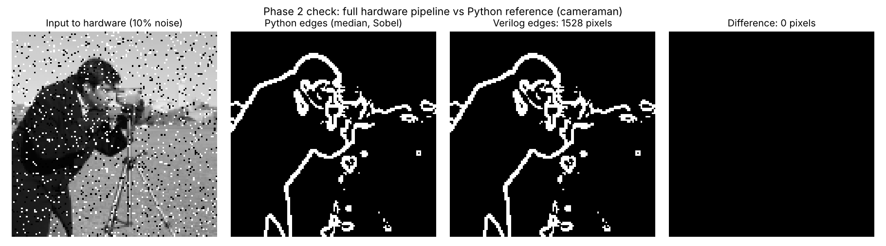
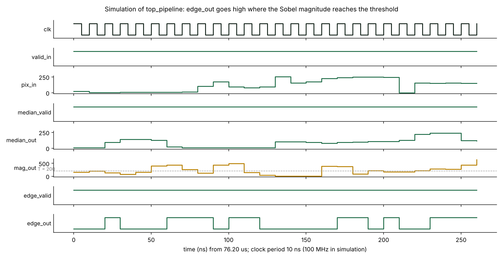
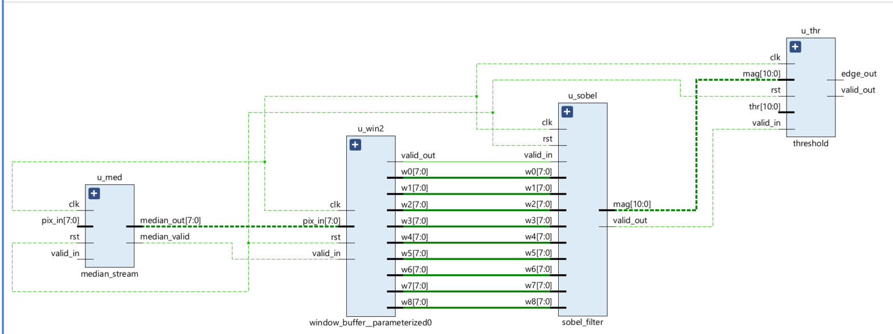
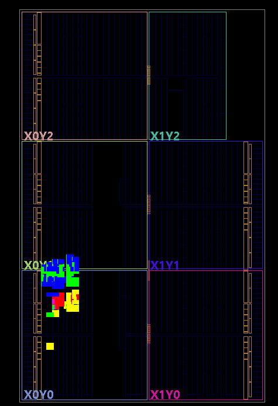

Clean the noise first, then find the edges
This page runs the same integer arithmetic as the project's Python model and Verilog hardware. Pick an image, add salt-and-pepper noise, and compare edge detection with and without the median filter.
Click any pixel in these images to inspect it in the next section.
| Measure | Edges, no filter | Edges, median first |
|---|---|---|
| False edge pixels | ||
| Edge accuracy (F1, 0 to 1) | ||
| Image PSNR vs original |
The reference edges come from running Sobel on the original, noise-free image. PSNR compares the noisy and the filtered image with the original; higher is closer.
Inside one pixel
Pixel . These are the exact steps the hardware takes for it.
-
Read the 3×3 window
The pixel and its 8 neighbours from the noisy image.
-
Sort each row
Each row of 3 becomes low, middle, high.
-
Combine the rows
-
Take the median
-
Sobel on the cleaned window
The same position in the filtered image, multiplied by the two Sobel kernels.
Clock by clock
The noise-removal stage of the hardware, median_stream.v, takes in one pixel per clock.
Step the clock to watch the line buffers fill, the window slide across the image, and clean pixels come out.
The simulation below follows the Verilog register by register.
Clock 0
Next input pixel row 0, column 0
Clean pixels out 0 of 15,876
First clean pixel not yet
median_filter, written in as each pixel comes out.Registers right now
Line buffers (128 pixels each)
Window, w0 to w8
Median stage 1: low, middle, high per row
Median stage 2 and output
Timing diagram, last clocks
The hardware is verified: bit-exact with Python
The complete Verilog pipeline (window buffer, median, second window buffer, Sobel, threshold) was simulated in Icarus Verilog. Every denoised pixel, every Sobel magnitude and every edge bit was compared automatically with the Python model.

| Test | What was checked | Result |
|---|---|---|
| Median unit test | 2,000 random windows: pure noise, ties, all black, all white | 2,000 of 2,000 match |
| Sobel unit test | 2,000 windows, including the largest possible magnitude (1530) | 2,000 of 2,000 match |
| Full pipeline | Noisy cameraman, one pixel every clock | 15,876 pixels, 15,376 magnitudes, 15,376 edge bits: 0 errors |
| With input pauses | About 25% random idle clocks | 0 errors |
| Two frames back to back | Cameraman, then coins, no reset | 31,752 pixels, 30,752 edge bits: 0 errors |

top_pipeline: edge_out goes high one clock after mag_out reaches the threshold of 200.Simulation logs
On the FPGA: Vivado 2025.2, Artix-7 xc7a35t
The verified design was synthesised, placed and routed in Vivado for the Artix-7 chip on the Basys3 board, with a 100 MHz clock target. Timing is met with room to spare.


| Resource | Used | Available | Utilisation |
|---|---|---|---|
| Slice LUTs | 474 (442 logic + 32 memory) | 20,800 | 2.28% |
| Flip-flops | 303 | 41,600 | 0.73% |
| Block RAM tiles | 1 (2 × RAMB18) | 50 | 2.00% |
| DSP slices | 0 | 90 | 0% |
| Worst setup slack (10 ns clock) | +1.659 ns, met; Fmax = 1 / (10 − 1.659) ns ≈ 119.9 MHz ≈ 7,300 frames/s at 128×128 | ||
| Critical path | Line-buffer block RAM → first median stage, 8.29 ns, 6 logic levels | ||
Run it live in Vivado (about 4 minutes)
- Open Vivado 2025.2 and click the Tcl Console tab at the bottom.
- Type these two lines, pressing Enter after each:
cd {C:/Users/Naina Sehgal/Desktop/FPGA} source synth/vivado_synth.tcl - When it finishes, the Device view shows the design on the chip, and the console prints the summary.
- Reports → Report Utilization, Reports → Timing → Report Timing Summary and Reports → Report Power show the numbers above.
- In the Netlist panel, right-click
top_pipeline→ Schematic to show the blocks.
The Verilog
Six modules. The top level joins them; Sobel needs only adders and 1-bit shifts, so the design uses no multipliers.
// ============================================================================
// top_pipeline.v
// Phase 2 top level: the complete streaming image-processing pipeline.
//
// pixel -> window_buffer -> median_filter -> window_buffer -> sobel_filter
// -> threshold -> edge bit
//
// Input : one 8-bit pixel per clock (when valid_in = 1), raster order,
// WIDTH x HEIGHT image.
// Output: denoised pixels, (WIDTH-2) x (HEIGHT-2) (median_out)
// edge bits, (WIDTH-4) x (HEIGHT-4) (edge_out)
// Latency through each block (register stages):
// window 1 + median 3 + window 1 + Sobel 2 + threshold 1 = 8 stages
// Throughput: 1 pixel per clock. Input pauses (valid_in = 0) are allowed.
// ============================================================================
module top_pipeline #(
parameter WIDTH = 128,
parameter HEIGHT = 128
)(
input wire clk,
input wire rst,
input wire [7:0] pix_in,
input wire valid_in,
input wire [10:0] thr, // edge threshold (default 200)
output wire [7:0] median_out,
output wire median_valid,
output wire [10:0] mag_out,
output wire mag_valid,
output wire edge_out,
output wire edge_valid
);
// ---- Stage A: denoise ----
median_stream #(.WIDTH(WIDTH), .HEIGHT(HEIGHT)) u_med (
.clk(clk), .rst(rst), .pix_in(pix_in), .valid_in(valid_in),
.median_out(median_out), .median_valid(median_valid));
// ---- Stage B: 3x3 window on the denoised (WIDTH-2)x(HEIGHT-2) image ----
wire [7:0] s0, s1, s2, s3, s4, s5, s6, s7, s8;
wire swin_valid;
window_buffer #(.WIDTH(WIDTH-2), .HEIGHT(HEIGHT-2)) u_win2 (
.clk(clk), .rst(rst), .pix_in(median_out), .valid_in(median_valid),
.w0(s0), .w1(s1), .w2(s2), .w3(s3), .w4(s4), .w5(s5), .w6(s6), .w7(s7), .w8(s8),
.valid_out(swin_valid));
// ---- Stage C: Sobel magnitude ----
sobel_filter u_sobel (
.clk(clk), .rst(rst),
.w0(s0), .w1(s1), .w2(s2), .w3(s3), .w4(s4), .w5(s5), .w6(s6), .w7(s7), .w8(s8),
.valid_in(swin_valid), .mag(mag_out), .valid_out(mag_valid));
// ---- Stage D: threshold -> edge bit ----
threshold u_thr (
.clk(clk), .rst(rst), .mag(mag_out), .thr(thr), .valid_in(mag_valid),
.edge_out(edge_out), .valid_out(edge_valid));
endmodule
// ============================================================================
// sobel_filter.v
// 3x3 Sobel gradient magnitude, pipelined in 2 stages
// (latency = 2 clocks, throughput = 1 window per clock).
//
// Gx kernel Gy kernel window
// -1 0 +1 -1 -2 -1 w0 w1 w2
// -2 0 +2 0 0 0 w3 w4 w5
// -1 0 +1 +1 +2 +1 w6 w7 w8
//
// Stage 1: Gx = (w2 + 2*w5 + w8) - (w0 + 2*w3 + w6)
// Gy = (w6 + 2*w7 + w8) - (w0 + 2*w1 + w2)
// (multiply by 2 is a 1-bit left shift: no multipliers needed)
// Stage 2: magnitude = |Gx| + |Gy| (11 bits; largest possible value is
// 1530, e.g. Gx = 1020 and Gy = 510)
//
// Same integer arithmetic as python/dip.py: sobel_mag().
// ============================================================================
module sobel_filter (
input wire clk,
input wire rst,
input wire [7:0] w0, w1, w2, w3, w4, w5, w6, w7, w8,
input wire valid_in,
output reg [10:0] mag,
output reg valid_out
);
// Each weighted column/row sum is at most 4*255 = 1020 -> 10 bits unsigned
wire [9:0] gx_pos = {2'b00, w2} + {1'b0, w5, 1'b0} + {2'b00, w8};
wire [9:0] gx_neg = {2'b00, w0} + {1'b0, w3, 1'b0} + {2'b00, w6};
wire [9:0] gy_pos = {2'b00, w6} + {1'b0, w7, 1'b0} + {2'b00, w8};
wire [9:0] gy_neg = {2'b00, w0} + {1'b0, w1, 1'b0} + {2'b00, w2};
// ---- Stage 1: signed gradients (-1020 .. +1020 -> 11-bit signed) ----
reg signed [10:0] gx, gy;
reg v1;
// ---- Stage 2: absolute values and sum ----
wire [9:0] abs_gx = gx[10] ? -gx[9:0] : gx[9:0];
wire [9:0] abs_gy = gy[10] ? -gy[9:0] : gy[9:0];
always @(posedge clk) begin
if (rst) begin
v1 <= 1'b0; valid_out <= 1'b0;
end else begin
gx <= $signed({1'b0, gx_pos}) - $signed({1'b0, gx_neg});
gy <= $signed({1'b0, gy_pos}) - $signed({1'b0, gy_neg});
v1 <= valid_in;
mag <= {1'b0, abs_gx} + {1'b0, abs_gy};
valid_out <= v1;
end
end
endmodule
// ============================================================================
// threshold.v
// Turns the Sobel magnitude into a 1-bit edge decision (1 clock of latency).
// edge = 1 when mag >= thr
// The threshold is an input, so it can be changed at run time
// (the project default is 200, the same as python/dip.py: THRESHOLD).
// ============================================================================
module threshold (
input wire clk,
input wire rst,
input wire [10:0] mag,
input wire [10:0] thr,
input wire valid_in,
output reg edge_out,
output reg valid_out
);
always @(posedge clk) begin
if (rst) begin
valid_out <= 1'b0;
edge_out <= 1'b0;
end else begin
edge_out <= (mag >= thr);
valid_out <= valid_in;
end
end
endmodule